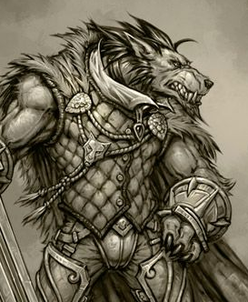

Playable Races > Vykoi
Read "vie-coy." Canine beastkin creatures that stand at about six feet tall. They live in very tight-knit packs, and rarely venture out of their haunts unless for very specific reasons.
Hound's Nose: Vykoi sense of smell is staggeringly powerful, being able to identify nearby creatures innately from level 1, track them down to their destination starting from level 4, judge alignment from level 8 and identify carried items on a tracked creature starting from level 12.
Hound's Ears: Vykoi have advantage on Listen rolls.
Racials: +1 STR +1 CON -1 WIS +4 Listen +4 Search
Health: 1d7 health points per level.
Origin: Like all beastkin, they are nomadic.